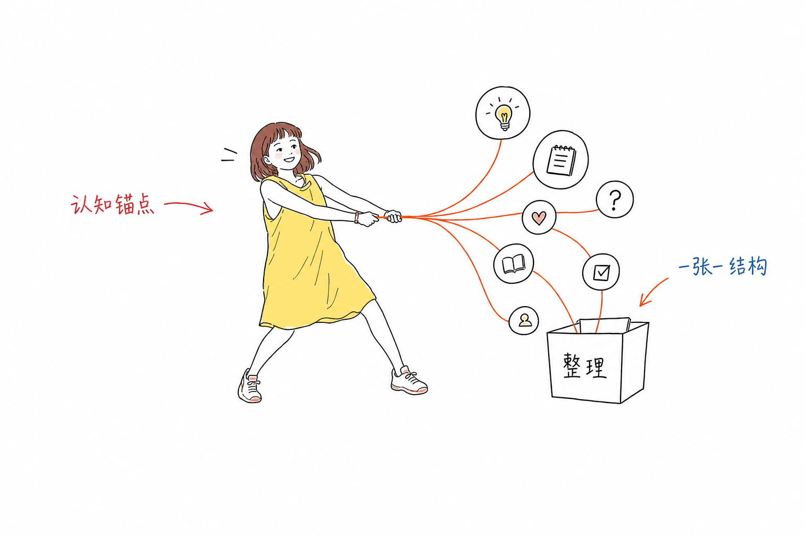

这是给不能打开 GitHub 仓库页面的模型看的完整说明。角色校准图就在本页。按下面的外形、颜色和禁忌作图，不要把真人照片贴进画面。
角色校准图直链：https://qiuyue-lab.github.io/yoyo-illustrations/assets/examples/yoyo-character-calibration-v5.png

Generate one standalone 16:9 horizontal Chinese article illustration.
Visual DNA:
Pure white background. Minimalist black hand-drawn line art. Slightly wobbly pen lines. Lots of empty white space. Sparse red/orange/blue handwritten Chinese annotations. Clean absurd product-sketch feeling. No gradients, no shadows, no paper texture, no complex background, no commercial vector style, no PPT infographic look, no cute mascot poster, no children's illustration, no realistic photo, no photorealistic portrait.
Recurring IP character required:
YoYo, a simplified hand-drawn female character. Shoulder-length reddish-brown hair with short bangs. Bright yellow sleeveless loose dress — extends to KNEE length only, NOT calf, NOT ankle, NOT floor-length. Light and not dragging. NO pants. Slim energetic body. Natural warm expression with a gentle smile, lively eyes, NOT blank deadpan face. Black thin hand-drawn outlines with flat yellow dress fill. YoYo must perform the core conceptual action, not decorate the scene. Serious, clean, slightly absurd, not cute, not photorealistic.
Use the calibration image only for hairstyle, yellow knee-length dress, and energetic personality. Stylize into hand-drawn sketch — do NOT paste a photo.
Theme: {正文配图主题}
Structure type: {Workflow / 系统局部 / 前后对比 / 角色状态 / 概念隐喻 / 方法分层 / 地图路线 / 小漫画分镜}
Core idea: {这张图要表达的核心意思}
Composition: {YoYo 在哪里、正在做什么、主要物件、信息如何流动}
Chinese handwritten labels: {标注词1} / {标注词2} / {标注词3}
One image explains only one core structure. 40%-60% main subject. At least 35% blank white space. Max 5-8 short Chinese labels. No top-left title.
每张图只选一个结构：前后对比、概念隐喻、角色状态、Workflow、系统局部、方法分层、地图路线、小漫画分镜（2–3 格）。
隐喻从文章里的动作或物件来，用低科技但成立的东西：凳子、绳子、镜子、虚线轮廓。YoYo 必须正在做这个动作。不要照抄旧图。